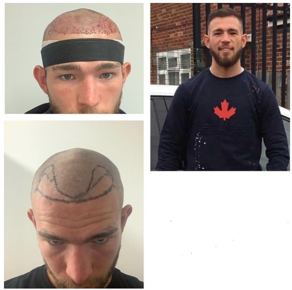
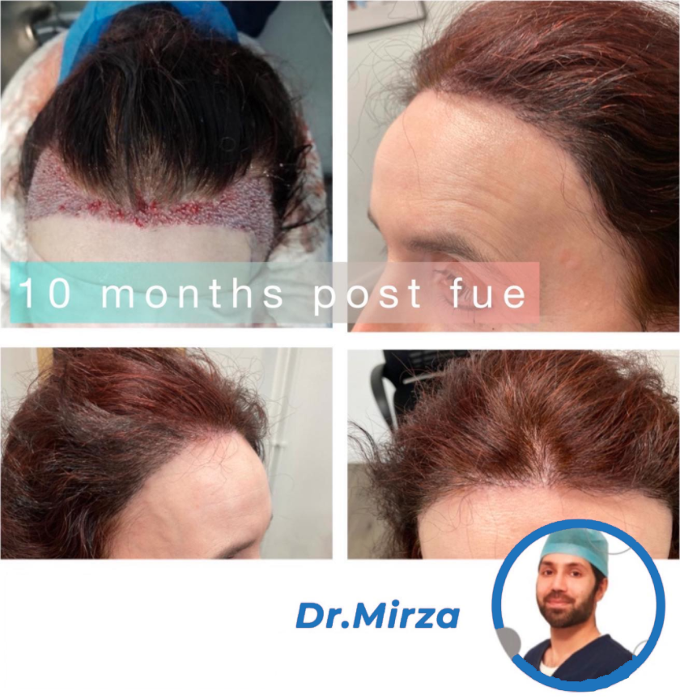

Our Doctor
Dr Sami
- Vast experience in the hair transplant industry. Highly sought-after surgeon having worked on many celebrity clientele. Having qualified over 12 years ago, he has attained breadth of surgical experience in many disciplines prior to specialising in hair restoration surgery. He has worked with many of the worlds leading hair transplant surgeons, having performed over 1500 successful procedures.
- Known for his keen attention to detail and caring attitude towards his patients, Dr Sami always aims to take a holistic approach and provide a complete package of care throughout the patient journey.
- Advanced & modern FUE methodology.
- Quality driven approach, an aesthetical connoisseur.
- Wealth of experience in beard and Afro hair transplants, including coverage for scarred areas.
- Minimally invasive hair and skin aesthetic surgery.
- Breadth of experience in multiple hair restoration techniques.
- Including Platelet-Rich Plasma, Growth Factor Concentrate and Mesotherapy.
- Devises tailored patient hair restorative & hair loss prevention treatment programmes.
- High density hairline, temple, and crown restoration.
- Patient-centred and caring attitude in his approach.
- Corticosteroid joint injection therapy.
- Keloid scar reduction therapy.
- Additional qualifications in Neuroscience and Neurophysiology.
Dr Sami specialises in:
Other interests:

6 Months post FUE Hair Transplant carried out by Dr Sami and his team

6 Months post FUE Hair Transplant carried out by Dr Sami and his team

6 Months post FUE Hair Transplant carried out by Dr Sami and his team

6 Months post FUE Hair Transplant carried out by Dr Sami and his team

6 Months post FUE Hair Transplant carried out by Dr Sami and his team

6 Months post FUE Hair Transplant carried out by Dr Sami and his team

10 Months post FUE Hair Transplant carried out by Dr Sami and his team
...
...